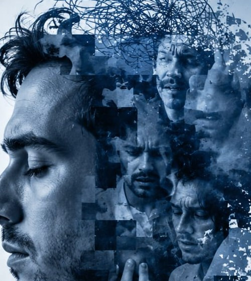

Dependência Química
Acolhimento humanizado e tratamento especializado para dependência de substâncias, com equipe preparada para apoiar cada etapa da recuperação.
Internação e tratamento especializado
A Miro Ribeiro Internações acolhe pessoas em sofrimento por dependência química, alcoolismo, ludopatia e transtornos mentais — com respeito, dignidade e uma equipe preparada para caminhar ao lado de quem decide recomeçar.
Sobre a clínica
Na Miro Ribeiro Internações, entendemos que pedir ajuda é o passo mais corajoso que alguém pode dar. Por isso, construímos um ambiente acolhedor, seguro e humanizado, onde cada pessoa é tratada com respeito, ética e sigilo — do primeiro contato até muito depois da alta.
Nossa equipe multidisciplinar trabalha de forma individualizada, olhando para cada história com atenção, sem julgamentos. Acreditamos que, com tratamento adequado e apoio da família, a recuperação é possível — e uma nova vida também.
Serviços e tratamentos
Oferecemos internação e acompanhamento para diferentes quadros, sempre com plano terapêutico individualizado e suporte à família durante todo o processo.
Acolhimento humanizado e tratamento especializado para dependência de substâncias, com equipe preparada para apoiar cada etapa da recuperação.
Programa completo de tratamento para dependência de álcool, com foco em saúde, autonomia e reconstrução de vínculos familiares.
Suporte especializado para o transtorno do jogo, incluindo apostas online, ajudando a recuperar o controle e reconstruir o futuro.

Acompanhamento clínico e psiquiátrico contínuo, com medicação, terapia e apoio familiar para mais qualidade de vida e estabilidade.
Quando a própria pessoa reconhece a necessidade de tratamento e solicita ajuda.
Solicitada por familiares, com avaliação médica, conforme prevê a Lei nº 10.216/2001.
Suporte contínuo para prevenção de recaída e reintegração familiar e social.
Diferenciais
Estrutura, ética e acolhimento em cada detalhe do tratamento.
Confidencialidade total sobre pacientes e tratamentos, do acolhimento à alta.
Profissionais de saúde qualificados e experientes, atuando de forma integrada.
Ambiente seguro, confortável e reservado, pensado para o bem-estar de cada pessoa.
Orientação e acompanhamento para os familiares durante todo o processo.
Cada tratamento é desenhado conforme a história e as necessidades de cada pessoa.
Escuta ativa e respeito à dignidade de cada pessoa, sem julgamentos.
Depoimentos
Os depoimentos abaixo são exemplos ilustrativos [EXEMPLO] e devem ser substituídos por relatos reais, com autorização, antes da publicação definitiva do site.
"Meu filho passou por um momento muito difícil com dependência química. Encontramos na Miro Ribeiro acolhimento, respeito e uma equipe que realmente se importou. Hoje ele está recuperando a vida dele."
"Procurei ajuda para o alcoolismo do meu marido sem saber por onde começar. Fui acolhida com muita clareza e sigilo em cada etapa. Hoje temos esperança de dias melhores."
"O suporte à família fez toda a diferença. Nos sentimos orientados e amparados durante todo o tratamento do meu irmão. Recomendo de coração."
Contato
Fale com nossa equipe com total sigilo. Estamos prontos para ouvir e orientar você e sua família.